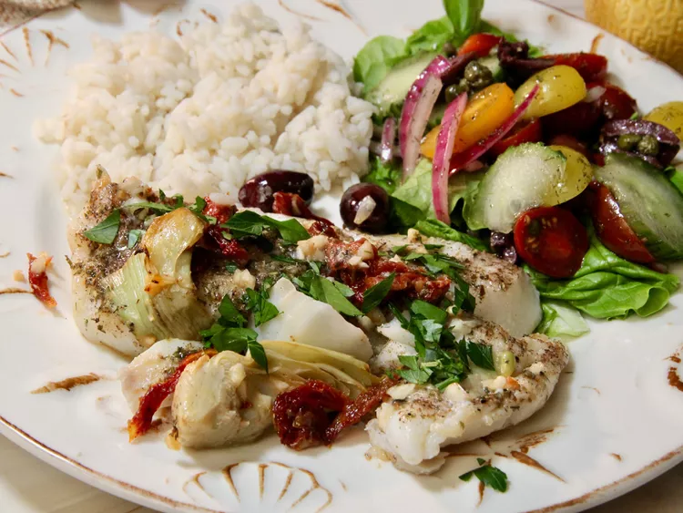

Mediterranean Baked Cod

Description
This Mediterranean baked cod is a simple recipe for adding Mediterranean flavor to flaky, healthy, baked cod . Topped with a lemony mix of olives, artichokes,
and sun-dried tomatoes, it’s quick and easy enough for the ultimate weeknight dinner, but impressive enough for guests.
Ingredients
- nonstick cooking spray
- 1 1/2 pounds cod filets
- 1 teaspoon olive oil
- 1 1/2 teaspoons Greek seasoning
- 1/3 cup pitted Kalamata olives
- 1/3 cup roughly chopped drained artichoke hearts in brine
- 1/4 cup julienned drained sun-dried tomatoes packed in olive oil
- 2 teaspoons freshly-squeezed lemon juice
- 3 cloves garlic, minced
- 1 tablespoon chopped fresh parsley, or as needed
- 4 fresh lemon wedges
Steps
- Preheat the oven to 375 degrees F (190 degrees F). Line a baking sheet with aluminum foil, and spray with cooking spray.
- Pat fish filets dry with a paper towel. Place cod on the baking sheet, lightly coat the tops with olive oil, and sprinkle with Greek seasoning.
- In a small bowl, combine Kalamata olives, artichoke hearts, sun-dried tomatoes, lemon juice, and garlic. Evenly spoon the mixture over the filets.
- Bake until cod flakes easily with a fork, 14 to 16 minutes. The internal temperature, measured with an instant-read thermometer, should reach 145 degrees F (63 degrees C). Baking time may vary slightly depending on the thickness of filets.
- Carefully remove cod and topping to a serving dish using a large spatula. Garnish with chopped parsley, and serve immediately with a wedge of lemon.